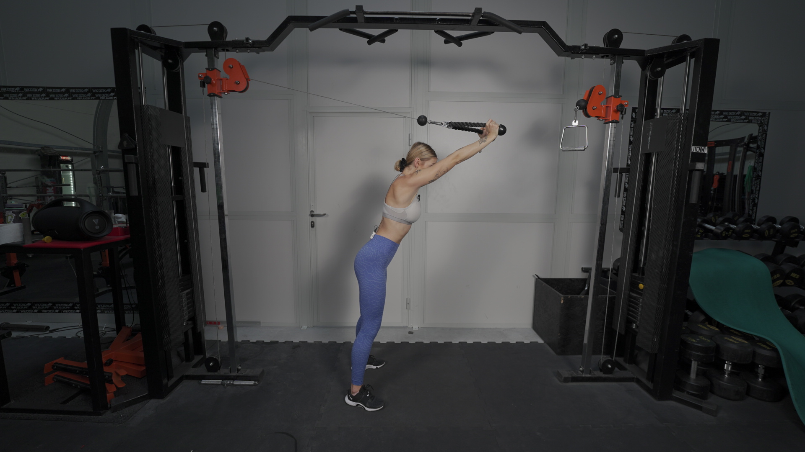
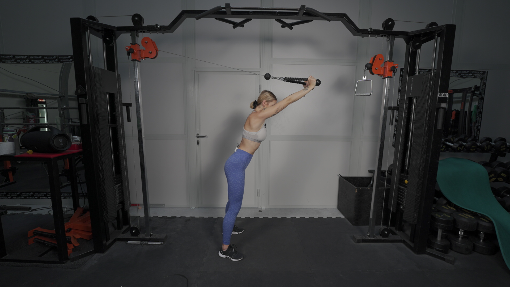

PROSTOWANIE PRZEDRAMION NA WYCIĄGU ZZA GŁOWY
 

1.Do wyciągu górnego przymocuj uchwyt “sznur”. Złap sznur stojąc tyłem do wyciągu.
2. Zrób 2 kroki w przód, tak aby ciężar zaczął Cię delikatnie ciągnąć w tył.
3. Stań na szerokość bioder lub nieco szerzej, tak aby pozycja była stabilna.
4. Napnij brzuch.
5. Wykonaj ruch prostowania przedramion, tak jakbyś chciała przenieść sznur przed siebie.
6. Łokcie prowadź blisko ciała przez cały ruch.